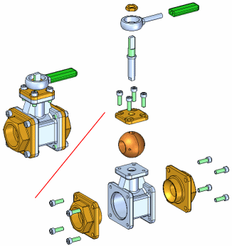
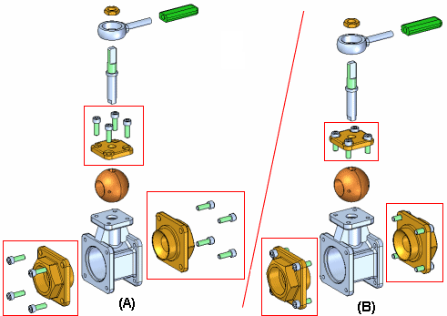
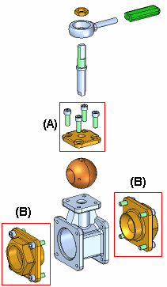
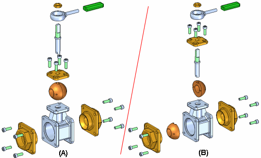

Auto-Explode command
Use the Auto-Explode command (also referred to as the Automatic Explode command) to explode the active assembly by applying a spread distance between parts.

The Automatic Explode command explodes assemblies based on the relationships applied between parts. In assemblies where the components are positioned using mate or axial align relationships, the Automatic Explode command quickly gives you excellent results.
Grounded parts, pipes, pipe fittings, frames, and fastener systems will not explode using the Automatic Explode command. These items should instead be exploded manually, using the Explode command.
Steps
The basic steps for automatically exploding an assembly are:
-
Specifying the components to explode.
-
Defining the explode settings.
-
Specifying the components
You can use the Select option on the command bar to specify whether all the parts and subassemblies in the assembly are exploded or only the subassemblies you select are exploded. When you explode selected subassemblies, you can select the subassemblies in the graphics window or the Assembly PathFinder tab.
-
Defining the explode settings
You can use the options on the command bar and the Automatic Explode Options dialog box to specify how the components are exploded. For example, you can specify whether the spread distance between parts is calculated automatically, or you can specify the spread distance yourself.
When exploding an assembly that contains subassemblies, you can specify how the parts in the subassemblies are exploded using the Automatic Explode Options dialog box.
Calculating spread distance
The Automatic Spread Distance button on the command bar allows you to specify whether the spread distance between parts is calculated automatically by the Automatic Explode command, or that you want to specify the spread distance yourself.
-
To have the spread distance calculated automatically, set the Automatic Spread Distance option.
-
To specify the spread distance yourself, clear the Automatic Spread Distance option, then type the value you want in the Distance box.
When defining the spread distance yourself, you can type the value you want, then click the Explode button to see the result. To try another spread distance, type a new value, then click the Explode button again.
Binding subassemblies
When using the Automatic Explode command on an assembly that contains subassemblies, you can specify whether the parts in subassemblies are exploded (A) or the parts in subassemblies are grouped together as a single unit (B). To keep the parts in the subassemblies grouped together, set the Bind All Subassemblies option on the Automatic Explode Options dialog box.

If you want to explode the parts in some subassemblies (A), but not others (B), you can use the Bind Subassembly command to select the subassemblies you want to remain a single unit when exploded.

First, select the subassemblies in Assembly PathFinder, then click the Bind Subassembly command. A symbol is added adjacent to the subassembly entry in Assembly PathFinder to indicate that the subassembly is bound.
You can then clear the Bind All Subassemblies option on the Automatic Explode Options dialog box, and only the bound subassemblies you selected remain a single unit when you complete the command.
If you want to explode the subassembly later, you can use the Unbind Subassembly command to unbind the subassembly.
Explode technique
The Explode Technique option on the Automatic Explode Options dialog box allows you to specify whether the subassembly is considered or ignored when creating the explosion.
The By Subassembly Level option specifies that each subassembly is considered as a unique explosion. This keeps the parts in a subassembly adjacent to one another as they are exploded (A).
The By Individual Part option specifies that the subassembly structure is ignored when the parts are exploded. The parts are exploded based on their proximity to one another. This can result in parts in separate subassemblies being intermingled with one another. (B) This option duplicates the behavior used prior to version 19 of Solid Edge.

Explode PathFinder tab
The Explode PathFinder tab on PathFinder lists the explode operations in the order you perform them. You can use the Explode PathFinder tab to review and modify explode operations. When you save explode configurations, each explode configuration captures a separate set of explode operations. When you activate an explode configuration, the Explode PathFinder tab updates to list the operations captured for that configuration.
Grounded parts
The Automatic Explode command cannot explode parts that are grounded. For example, when you create a new part within the context of the assembly using the Create In-Place option, the part is positioned using a ground relationship. You can use the Explode command to manually explode a grounded part, or you can delete the ground relationship, then position the part using assembly relationships, such as mate and align.
How do I
Explode an assembly automaticallyExplode individual parts in an assembly
Reposition a Part in an Exploded Assembly
Remove a part from an exploded assembly
Collapse a part in an exploded assembly
Drag an exploded part in an assembly
Unexplode an Assembly
Keep a subassembly intact when exploding
Unbind a subassembly
Drop flow lines
Display or Hide Flow Lines in an Exploded Assembly
Add Events to or Remove Events from an Event Group
Learn more
Creating exploded views of assembliesLook up more details
Automatic Explode command barAutomatic Explode Options dialog box
Explode command
Explode command bar
Manual Explode Options dialog box
Explode PathFinder tab
Explosion Properties dialog box
Reposition command
Reposition command bar
Remove command (Explode application)
Collapse command
Drag Component command
Drag Component command bar
Unexplode command
Bind Subassembly command
Unbind Subassembly command
Draw command (flow lines)
Draw command bar
Modify command
Modify command bar
Flow Lines command
Flow Line Terminators command
Show Flow Lines Command
Hide Flow Lines Command
Remove Event from Group Command
Add Event to Group Command
Display Configuration Options dialog box